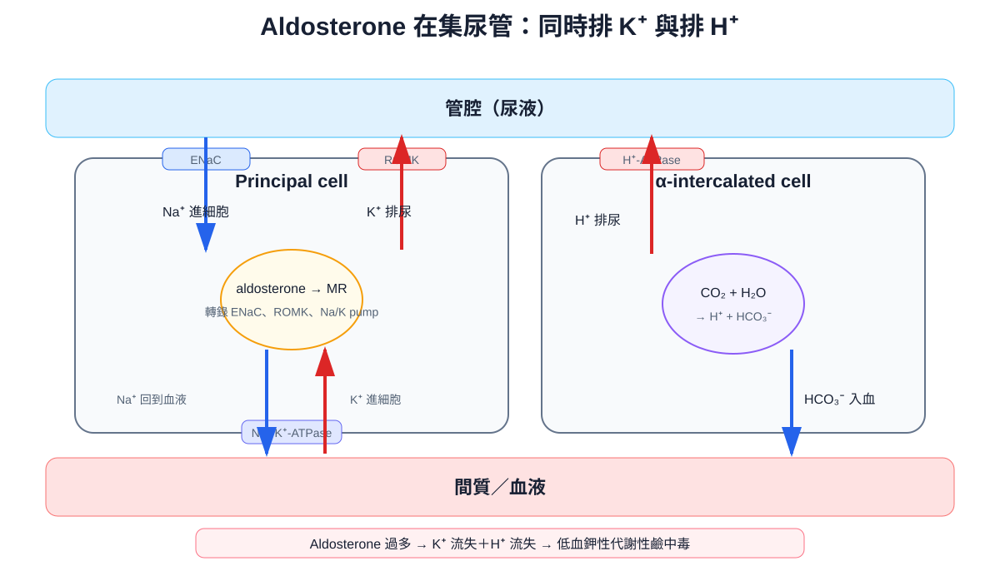
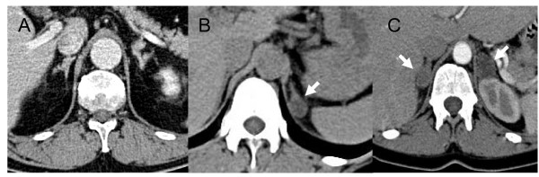
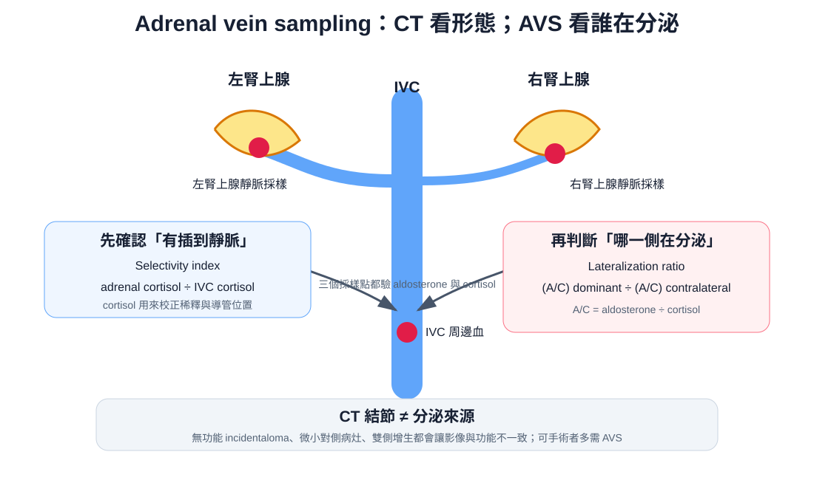

疾病內分泌
Primary aldosteronism ｜ 原發性醛固酮增多症 · Conn syndrome
筆記更新 2026-07-28·整理狀態：可用
其他名稱 8
Primary aldosteronism · 原發性醛固酮增多症 · 原發性高醛固酮症 · PA · Conn syndrome · 康氏症候群 · Primary hyperaldosteronism · 醛固酮腺瘤
方向性規則：aldosterone 高 ＋ renin 極低
凡是「原發性」的內分泌亢進，都是下游荷爾蒙高、上游調控訊號被回饋壓低：PA 是 aldosterone 高／renin 低；Cushing 腺瘤是 cortisol 高／ACTH 低；原發性甲狀腺亢進是 T4 高／TSH 低（對照組：原發性副甲狀腺亢進是鈣高、PTH 卻沒被壓低，見 Hypercalcemia）。反過來，上下游同時高＝續發性或異位分泌（腎動脈狹窄、異位 ACTH、TSH 分泌腺瘤）。ARR 之所以能當篩檢工具，正是因為它把「分子高」與「分母低」兩個獨立訊號相乘——單看 aldosterone 會被飲食鈉量與姿勢干擾。同一條規則也決定試驗類型：分泌過多用抑制試驗，分泌不足才用刺激試驗（→ Adrenal insufficiency）。

Aldosterone 在 principal cell 上調 ENaC、ROMK 與 Na⁺/K⁺-ATPase，在 α-intercalated cell 增加 H⁺ 分泌；排鉀與排氫同時發生，因此典型生化組合是低血鉀性代謝性鹼中毒。自製示意圖。
其餘生化方向：代謝性鹼中毒（aldosterone 排鉀與排氫成對出現；看到低血鉀 ＋ 酸中毒就跳出醛固酮軸，改想 RTA type 1／2、腹瀉，見 Arterial blood gas）、血鈉正常至輕度偏高、不水腫（aldosterone escape：鈉滯留有壓力性排鈉與 ANP 當煞車，排鉀沒有煞車；高血壓 ＋ 低血鉀又明顯水腫，要想心衰竭、肝硬化、腎病症候群的續發性醛固酮增多，那邊 renin 是高的）。臨床上 PA 沒有專屬症狀，典型是「三種藥還降不下來」的中年高血壓，可有肌肉無力、抽筋、多尿夜尿；少數以嚴重低血鉀的心律不整（含 Atrial fibrillation）、橫紋肌溶解或早發中風為第一個表現，常合併胰島素阻抗（Metabolic syndrome、T2DM）。→ 主訴流程：Hypertension↗、Hypokalemia
診斷
誰該篩：頑固性高血壓（含利尿劑的三種藥仍未達標，或需四種以上）、自發性或利尿劑誘發的顯著低血鉀、腎上腺偶發瘤 ＋ 高血壓（偶發瘤本來就要同時排除 PA、Cushing syndrome 與 Pheochromocytoma↗——三個病、三個不同的第一線試驗，不能互換）、年輕發病（一般以 30–40 歲以下為界）、早發中風或早發高血壓的家族史、合併 OSA、高血壓 ＋ 心房顫動或不成比例的左心室肥厚。任一條符合就值得驗一次（新版指引方向是把族群放得更寬，但屬弱建議）。
ARR 怎麼判：抽 aldosterone 與 renin（PRA 或 DRC），同時看三件事——① renin 被抑制到很低、② aldosterone 確實升高、③ 兩者相除的 ARR 升高，三者一起成立才算陽性。切點隨檢驗室與單位而不同（PRA 與 DRC 差好幾個數量級），記方向、不要記數字；只看比值會製造假陽性——renin 趨近零時，任何平庸的 aldosterone 除下去都會生出大比值，老年人、慢性腎病、用 β-blocker 者特別容易踩到。
| 干擾因素 |
對 renin |
對 aldosterone |
ARR 方向 |
怎麼處理 |
| MRA：spironolactone、eplerenone |
↑↑ |
↑ |
偽陰性 |
停約 4 週再驗——唯一非停不可的一類。例外：帶藥驗而 renin 仍被壓得很低（尤其病人仍低血鉀），陽性結果依然可信 |
| β-blocker、中樞 α2 agonist |
↓↓ |
↓ |
偽陽性 |
2016 ES 停約 2 週；2025 ES 已改為多可帶藥驗 |
| ACEI／ARB／direct renin inhibitor |
↑↑ |
↓ |
偽陰性 |
2016 ES 停約 2 週；若沒停而 renin 仍被壓得很低，這個結果反而更有說服力 |
| 利尿劑（thiazide、loop） |
↑ |
↑ |
偽陰性 |
停 4 週以上 |
分側：CT 之後仍然要 AVS
| Adrenal CT：看形態 |
AVS：看功能 |
 |
 |
| A：雙側增生；B：左側低密度結節；C：雙側結節。三種外觀都不能單憑 CT 判定分泌側 |
左右腎上腺靜脈與 IVC 三處採樣；先用 cortisol 確認插管，再用兩側 A/C ratio 判斷 lateralization |
CT 原圖：Amar et al., Orphanet J Rare Dis 2010, Figure 4（PubMed，CC BY 2.0）；AVS 為自製示意圖。
鑑別診斷
PA 的定位一句話：aldosterone 高 ＋ renin 低。往兩邊各走一步就是它最重要的三個對手——renin 也高 → 續發性；aldosterone 也低 → Liddle／甘草；血壓不高 → Bartter／Gitelman。
| 要排除的 |
支持它的線索 |
怎麼排除 |
| 續發性醛固酮增多症：腎動脈狹窄、腎素瘤 |
腹部血管雜音、給 ACE inhibitor 後肌酸酐上升、雙腎不等大、急性肺水腫 |
renin 也是高的 → ARR 不升高；腎動脈影像 |
| Liddle syndrome、假性醛固酮增多症（甘草／11β-HSD2） |
高血壓 ＋ 低血鉀 ＋ 鹼中毒三項與 PA 一模一樣 |
aldosterone 低、renin 也低。Liddle 用 amiloride 不是 spironolactone；甘草靠病史 |
| OSA |
打鼾、日間嗜睡、肥胖、夜間血壓不下降 |
睡眠檢查。與 PA 常並存，不是二選一——兩個都要處理 |
另外要單獨記住 Pheochromocytoma↗：同住腎上腺、同樣以高血壓表現，但驗的是持續釋出的代謝物 plasma free metanephrines（不是陣發釋出的母體荷爾蒙），且術前一定 α-blocker 先於 β-blocker。腎上腺偶發瘤要同時排除 PA、Cushing syndrome 與它。
治療
| 情境 |
處置 |
重點 |
| 單側（APA、單側增生），能接受手術 |
腹腔鏡單側腎上腺切除 |
低血鉀幾乎都會完全矯正，血壓多數改善、約三分之一可完全停藥；術前先用 MRA 或補鉀把血鉀與血壓拉回來 |
| 雙側增生 (IHA)、拒絕或不適合手術 |
MRA：spironolactone 為第一線，低劑量起始逐步加量 |
目標是血鉀正常且不需補鉀、血壓達標、renin 不再被完全抑制（代表阻斷夠了）；血壓仍不達標再加 CCB／thiazide，但 MRA 不能被取代掉 |
| spironolactone 副作用不能忍受 |
改 eplerenone |
spironolactone 交叉作用於 progesterone／androgen receptor → 男性乳房發育、乳房脹痛、性功能障礙、女性月經異常；eplerenone 選擇性高但降壓較弱、半衰期短需一天兩次 |
| 所有病人 |
限鈉飲食、控制體重、治療並存的 OSA |
高鈉攝取會直接抵銷 MRA 的效果 |
禁忌與陷阱
相關連結